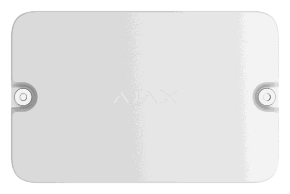
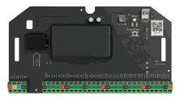
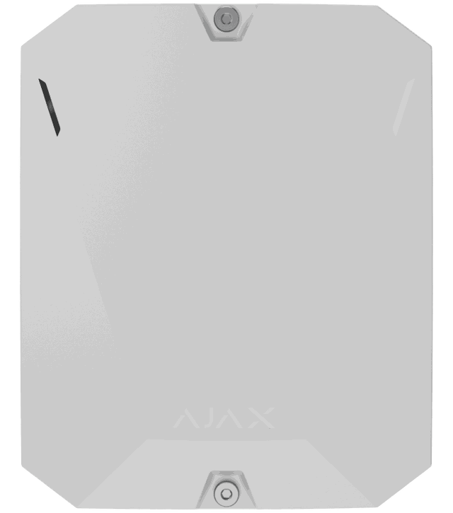
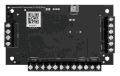

Type4 I/O Module (2x2) Jeweller
Modules d'intégration
Réf. fabricant IOM.T4.J · Ajax Systems, marque partenaire
Sur devisÉtude, fourniture et installation par Active Sécurité 974
Module Type 4 adressable sans fil avec deux entrées et deux sorties pour équipement d’alarme incendie
- Communication : sans fil
- Étude et devis gratuits, sans engagement
- Installation chez vous, partout à La Réunion
- Partenaire agréé Ajax Systems
| Modèle | Type4 I/O Module (2x2) Jeweller |
|---|---|
| Référence fabricant | IOM.T4.J |
| Gamme | Type4 Line |
| Type | Modules d'intégration |
| Points clés |
|
| Coloris officiels | Noir, Blanc |
| Prix | Sur devis |
| Disponibilité | Précisée dans le devis |
Dans la même famille
Autres produits.





